Nuestra Historia
La Comunidad Piura nació como un punto de encuentro entre amigos, vecinos y personas con un mismo objetivo: mantenerse unidos y apoyarse mutuamente. Con el tiempo, hemos crecido hasta convertirnos en una gran familia digital, donde celebramos cumpleaños, realizamos sorteos, compartimos recuerdos y seguimos fortaleciendo los lazos que nos unen.
Esta página es el reflejo de ese espíritu: moderna, inclusiva y siempre enfocada en brindar lo mejor para todos nuestros miembros. Aquí encontrarás actividades, sorpresas y un espacio que pertenece a cada uno de ustedes.
 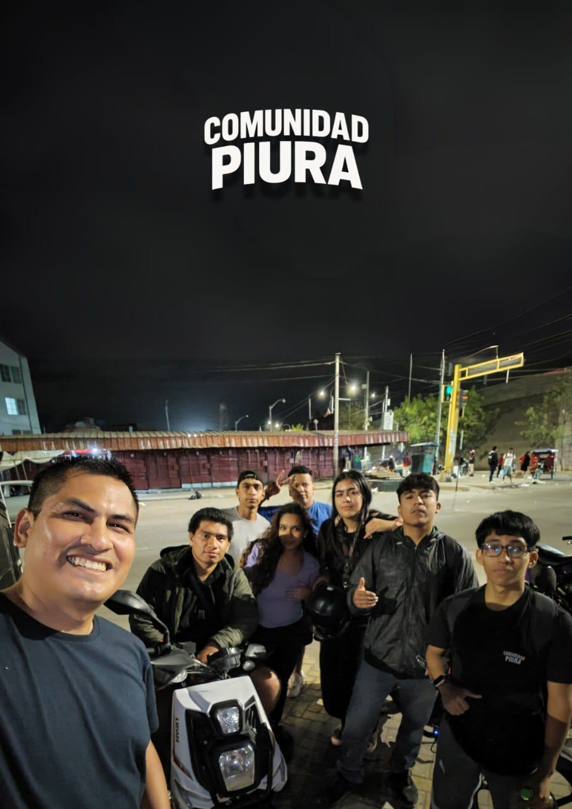
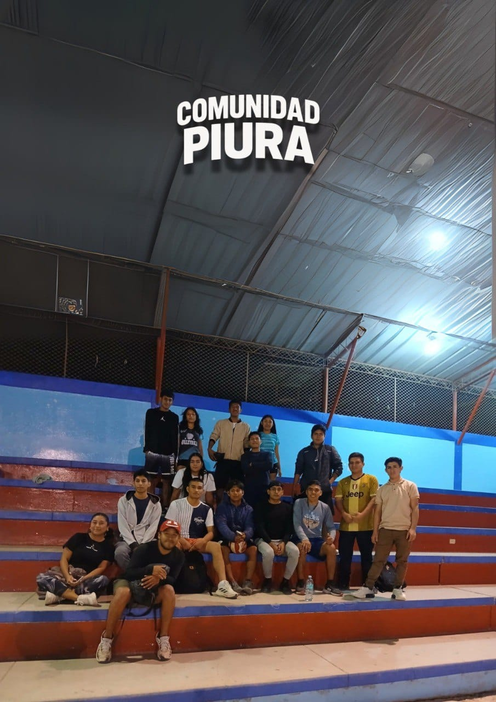
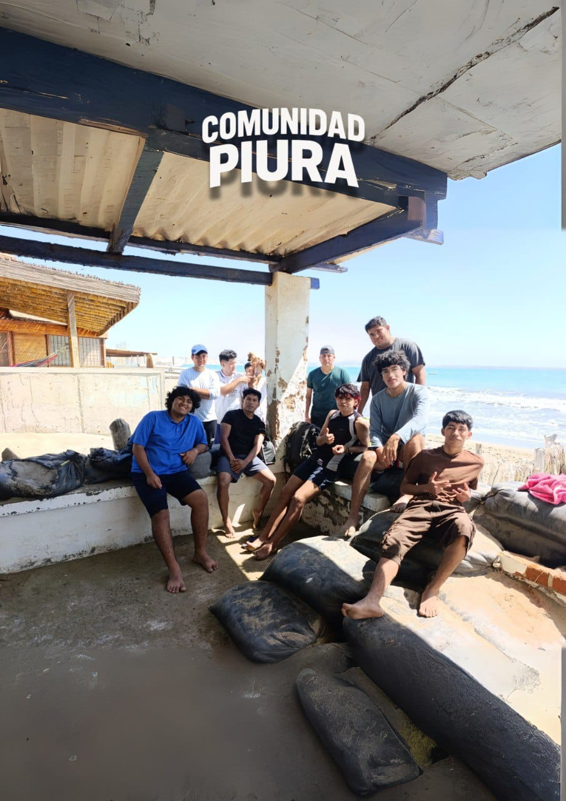
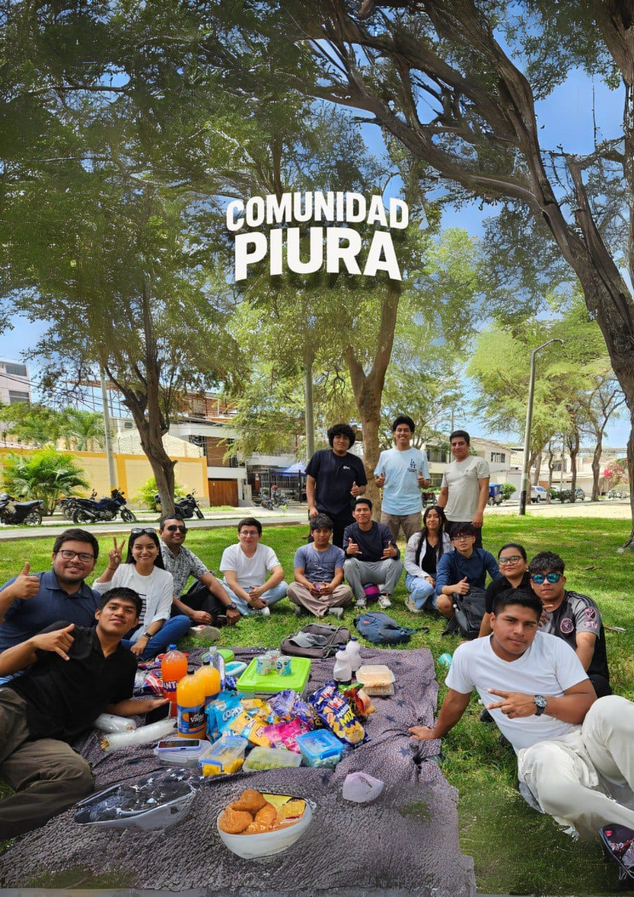
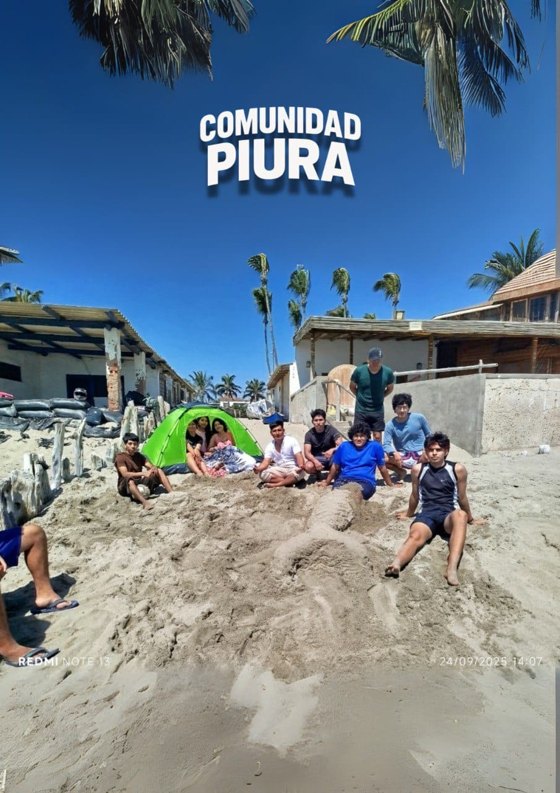
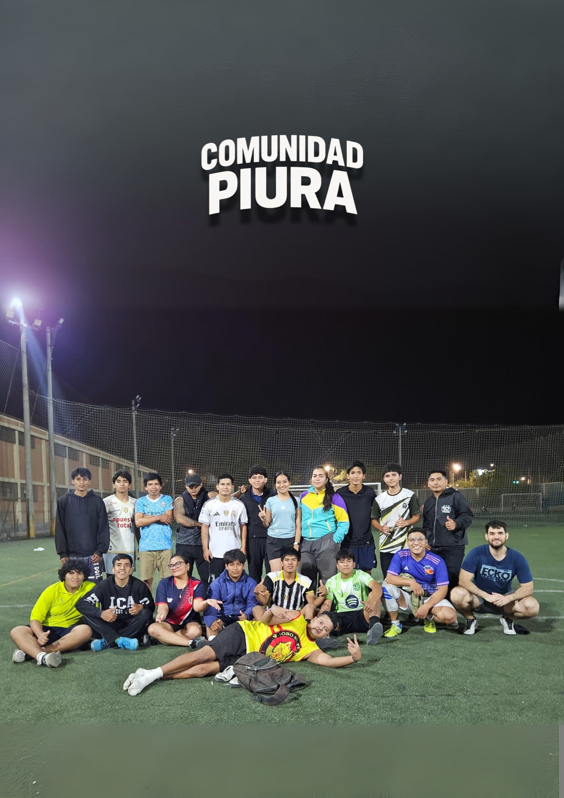
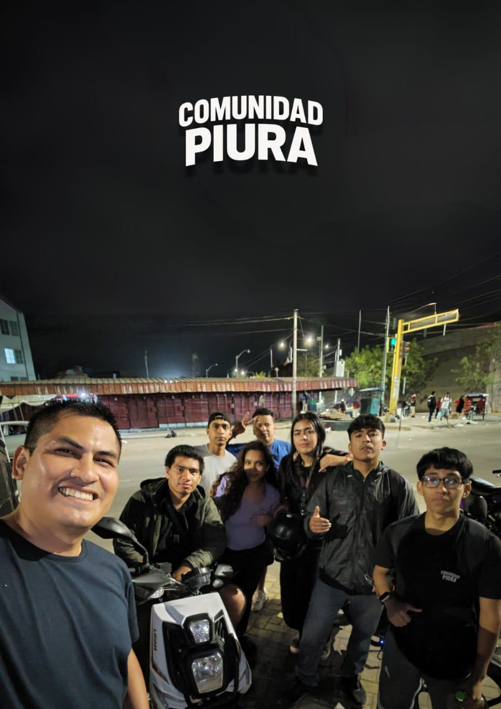
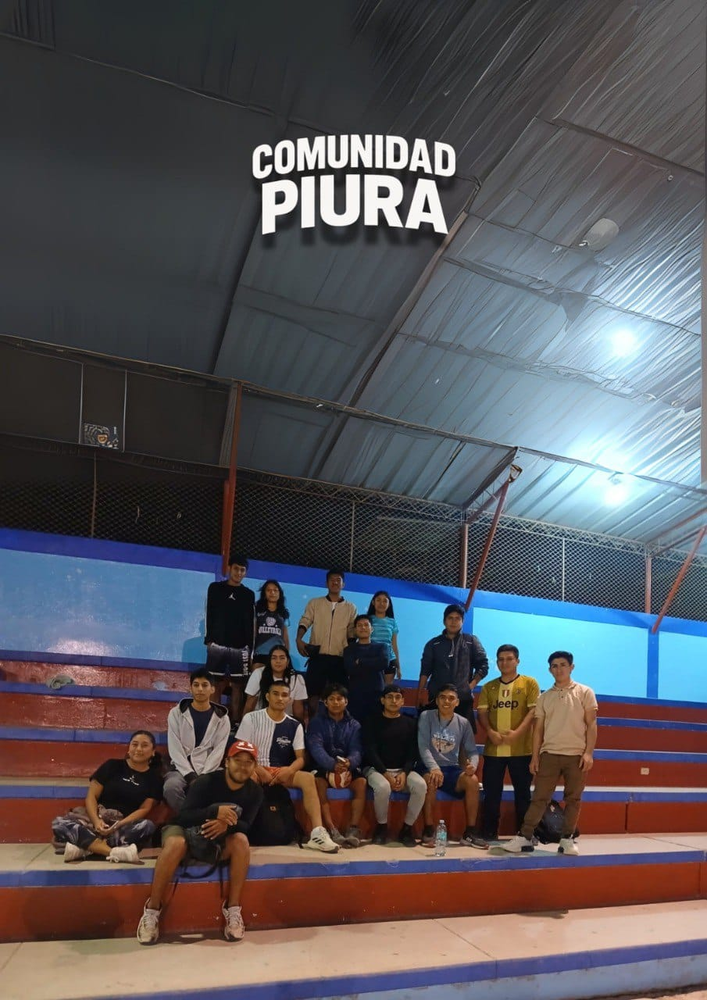
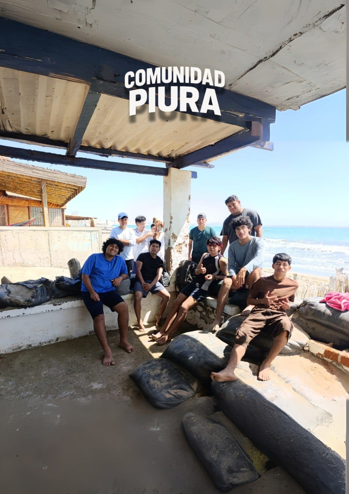
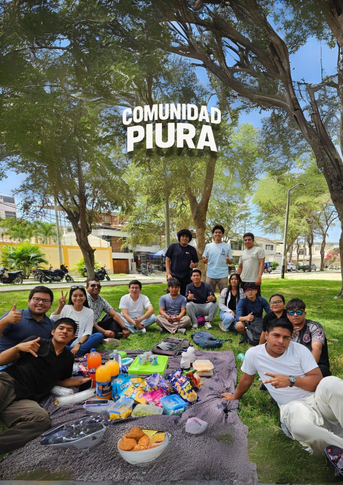
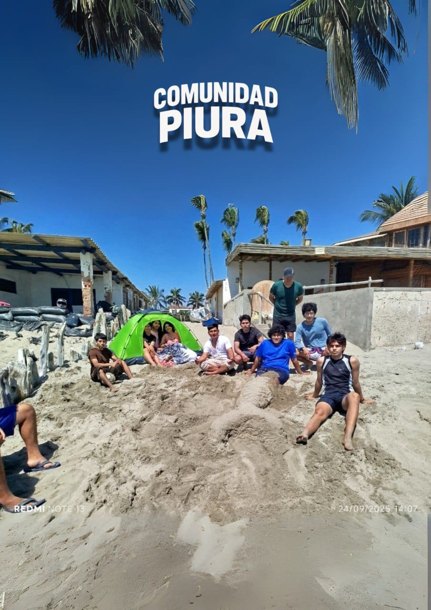
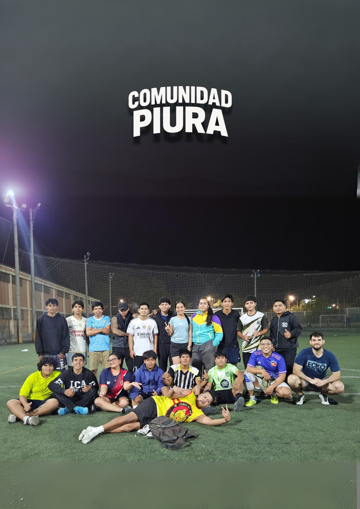